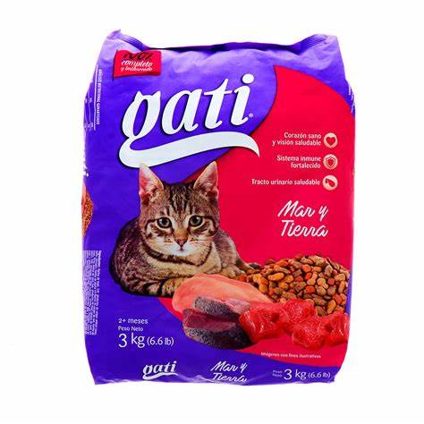
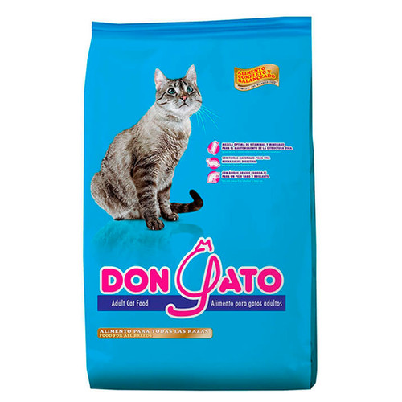
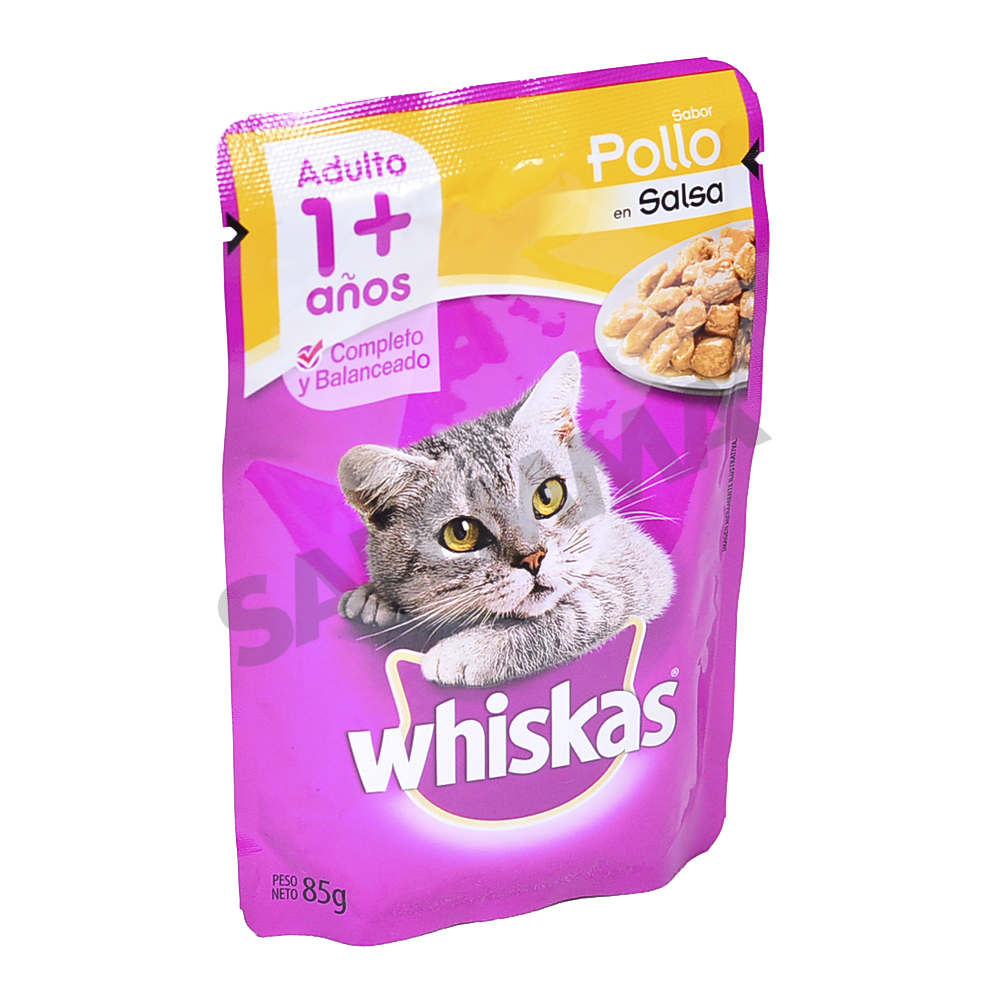

Novedades
Nuevos collares para perros
Descubre nuestra última colección de collares para perros en diferentes estilos y colores, perfectos para consentir a tu mejor amigo.


Estos collares cuentan con hebillas de liberación rápida que permiten un ajuste seguro y sencillo, garantizando que tu perro esté cómodo en todo momento. Además, algunos modelos incluyen placas de identificación personalizables para que puedas asegurarte de que tu mascota esté siempre segura y fácilmente identificable.
Alimento premium para gatos
  Nuestras comidas para gato ofrecen una deliciosa experiencia culinaria diseñada específicamente para satisfacer el paladar exigente de tu felino favorito. Elaboradas con ingredientes de la más alta calidad, estas comidas son un deleite para los sentidos de tu gato y una elección nutritiva que te ayudará a mantener a tu mascota en su mejor estado.
Nuestros Servicios
Peluquería para mascotas
En nuestro servicio de peluquería para mascotas, nos enorgullece ofrecer una gama completa de servicios de cuidado y belleza que harán que tu mascota luzca y se sienta increíble. Sabemos que el bienestar de tu querido compañero peludo es una prioridad, y es por eso que nuestros experimentados profesionales se dedican a proporcionar un cuidado excepcional en un ambiente tranquilo y amigable.
Asesoramiento nutricional
Nuestro servicio de asesoramiento nutricional para mascotas está diseñado para brindar la máxima atención a la salud y el bienestar de tu compañero peludo. Sabemos que una dieta adecuada es esencial para mantener a tu mascota en su mejor forma y mejorar su calidad de vida. Nuestros expertos en nutrición animal están dedicados a proporcionar orientación personalizada y soluciones específicas para las necesidades dietéticas individuales de tu mascota.